Amazon Lex - Hands On
This tutorial provides a hands-on look at Amazon Lex and how it works. We will walk through the process of creating a sample "BookTrip" bot using the traditional method. The goal is to understand the core configurations of a Lex bot, including intents, utterances, and slots, and to see how they come together to form a conversational flow.
Prerequisites
- Note: To use the more advanced Generative AI bot creation method, you need to have Amazon Bedrock set up and configured to use a model like the Anthropic V2 model. For this tutorial, we will use the traditional method, which has no special prerequisites.
Creating a Bot with an Example
We're going to use the traditional method and start with a pre-built example to explore the configuration.
-
Choose a Creation Method
In the Amazon Lex console, when you create a bot, you have two methods:
-
the traditional method or
-
the generative AI method.
The generative AI method is where you describe what you want the bot to do, and it is automatically generated.
The traditional way is to create a blank bot, start with an example, or start with transcripts. Honestly, they're pretty similar.
- For this demonstration, select the traditional method and choose to
"Start with an example."
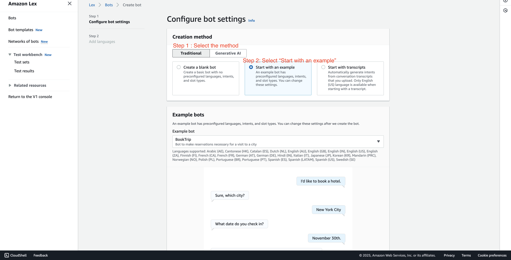
-
-
Select the "BookTrip" Example
We can start with a "BookTrip" type of bot, which is going to allow us to book a hotel trip automatically. This is a sample conversation.
-
Select the BookTrip example from the list.
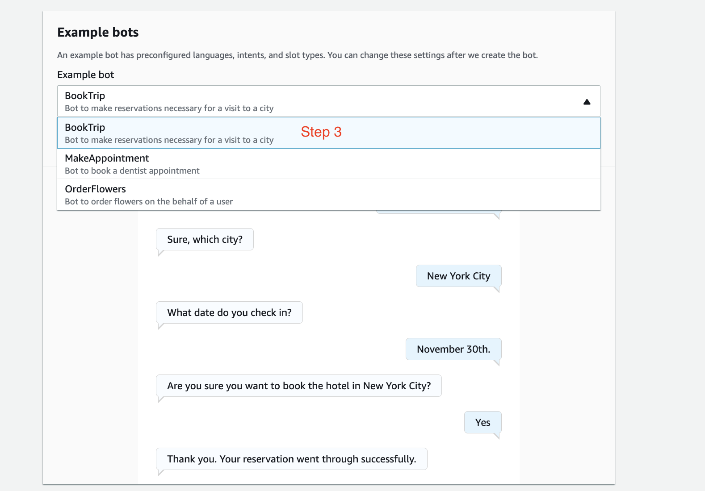
-
-
Configure Bot Name and Permissions
-
Bot name: Enter
DemoBookTrip. We just want to see the configurations. -
Permissions: We're going to create a role with basic Amazon Lex permissions. Select the option to create a new role.
-
Children's Online Privacy Protection Act (COPPA): When asked, "Is use of your bot subject to the Children's Act?", select No.
-
Click
"Next".
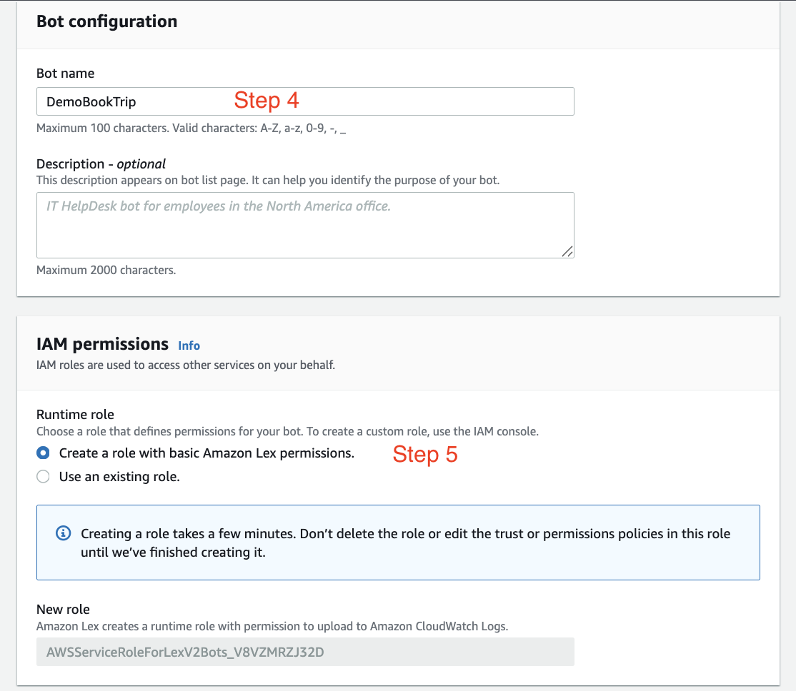
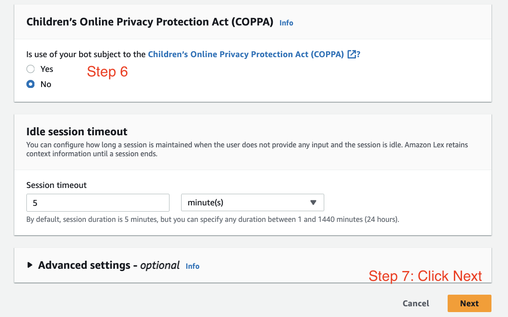
-
-
Configure Language and Voice
Now, we're going to configure the bot and we need to add languages.
-
Language: We'll just have English right now.
-
Voice: For voice, we'll have Danielle talk to us.
-
Perfect, let's click on "Done".
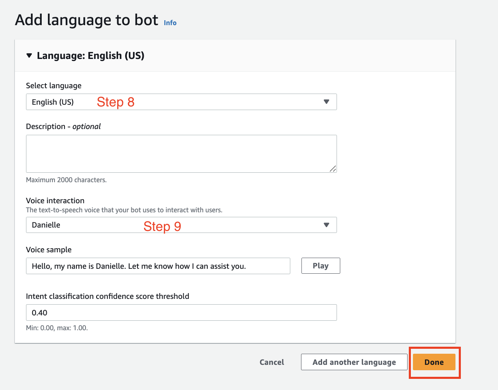
-
Your bot is now being configured.
Exploring the Amazon Lex Builder
Here we are in the builder of Amazon Lex. Our bot has a lot of things you can see on the left-hand side. I'll try to keep it as easy as possible because we don't wanna go too deep.
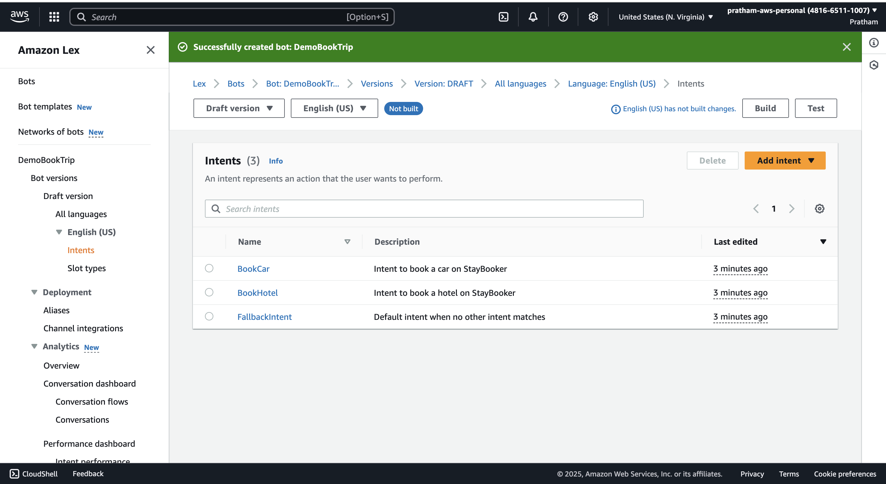
Understanding Intents
We have what's called three "intents." The intent is what is the bot's intention; what can the user want to perform?
With this bot, we can do two things: booking hotels or cars.
-
BookHotel: An intent for when the user wants to book a hotel.
-
BookCar: An intent for when the user wants to book a car.
-
FallbackIntent: If the user can't do any of these things, we'll have a default intent when no other intent matches, maybe to indicate to the user what the bot can and cannot do.
Deep Dive: The "BookHotel" Intent
Let's click on BookHotel and have a look at the conversation flow. This is a simple conversation one can have with the bot.
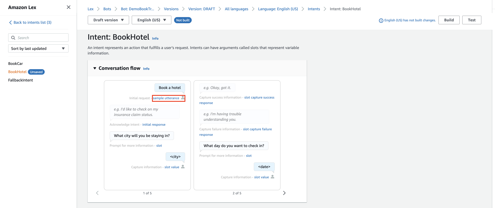
Sample Utterances
An "utterance" is a way to say, well, if we say "book a hotel," then most likely the bot is going to say that we want to book a hotel. So this is an utterance. We can add context and say, okay, what type of sample utterances could it be that will invoke this flow?
Examples include:
-
"book a hotel"
-
"I want to make hotel reservations"
-
"book {NumberOfNights} nights in {Location}"
You can see here the {NumberOfNights} and {Location} are slots; they're parameters for our booking system.
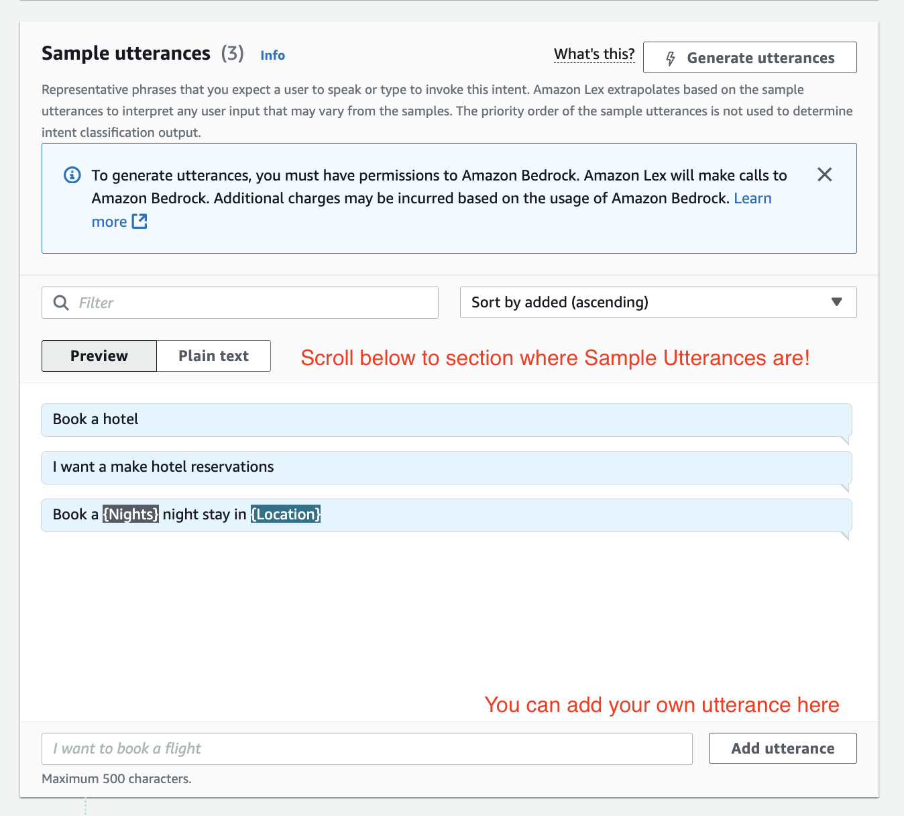
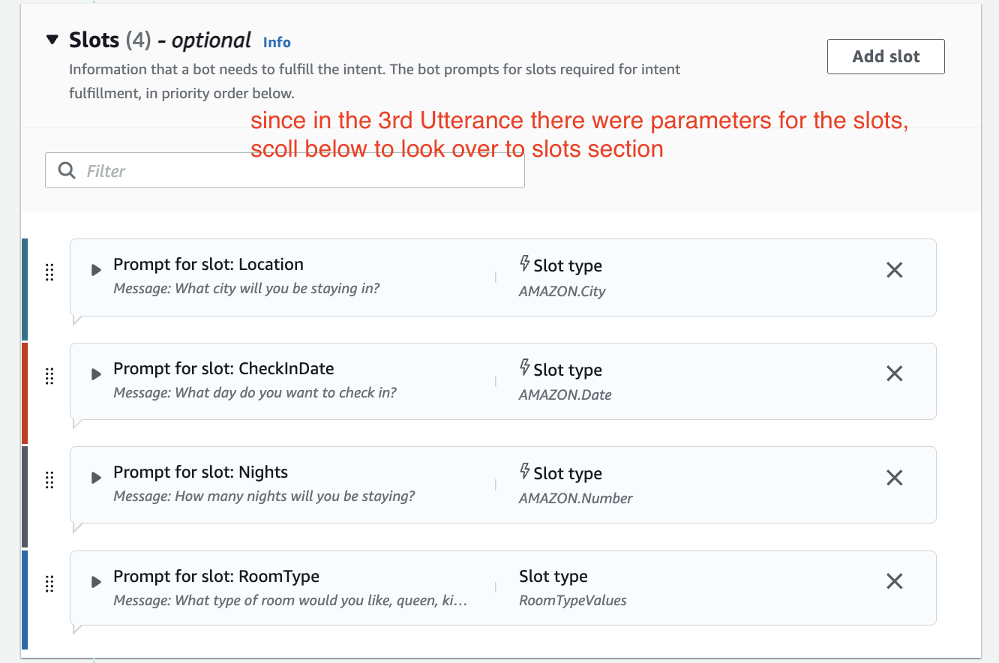
Slots (The Bot's Questions)
After an utterance triggers the intent, there is acknowledgement, and then we have questions. So we know we want to book a hotel, okay, but we need information. The slots right here, as you can see, we have four of them (see image above and compare it with the image where it talks about conversation flow). They're like the inputs so that the bot can actually book a hotel.
The bot will ask questions to get this information:
-
"What city will you be staying in?" (To fill the
Locationslot) -
"What day do you want to check in?" (To fill the
CheckInDateslot)
We can basically edit the bot to say, "Okay, I don't understand you," or, "Okay, I got you," and we can program how the bot reacts.
The four slots for this intent are:
-
Location
-
CheckInDate
-
NumberOfNights
-
RoomType
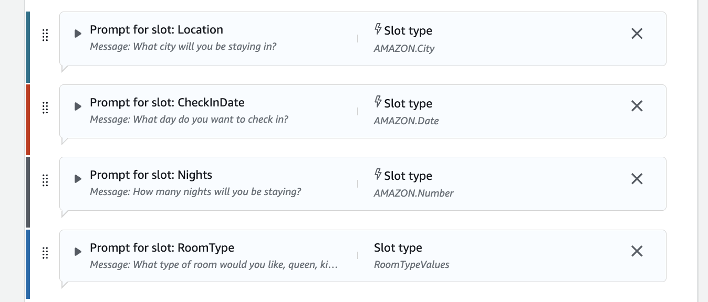
Confirmation and Fulfillment
When we're good and have all the slot information, we say, "Okay, we confirm the intent." And here we can fulfill it.
- Fulfillment: This section is not active because we don't have a Lambda function. But if we had a Lambda function to actually book this, then the bot would send all these slots—all these parameters—to the Lambda function. And then thanks to all these parameters, the Lambda function can then do a booking. So this is quite handy.
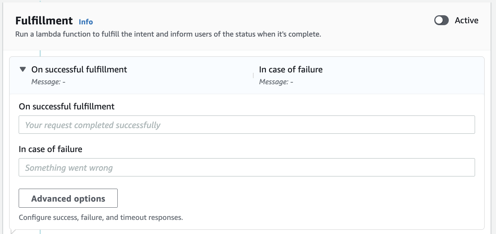
The Visual Builder
You also have a visual builder, and it looks like this.
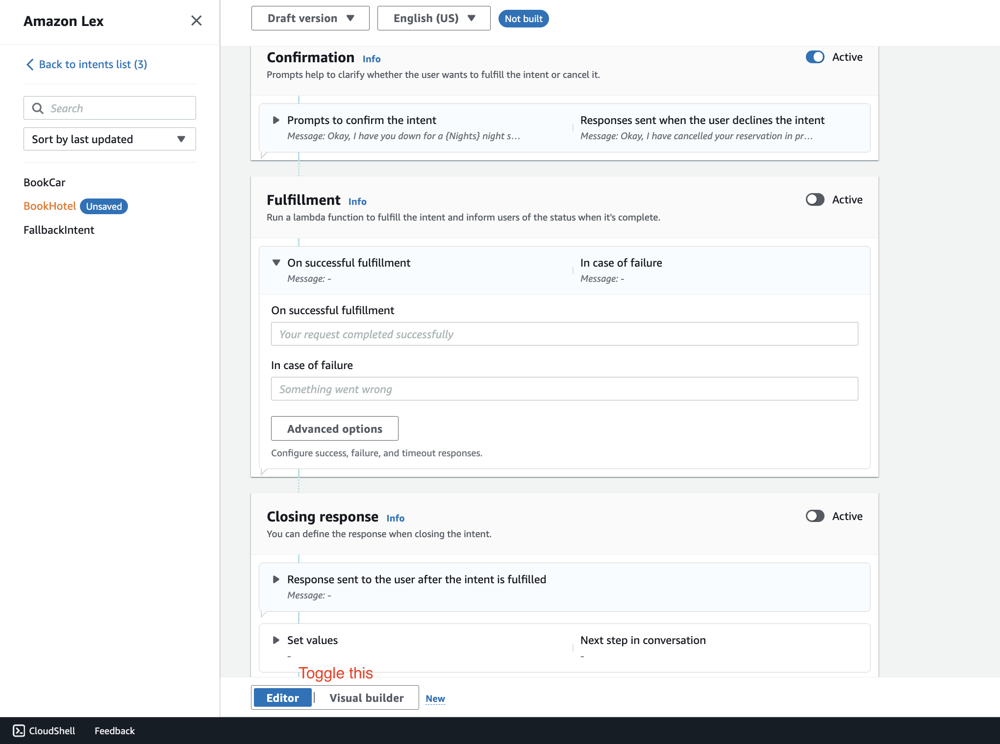
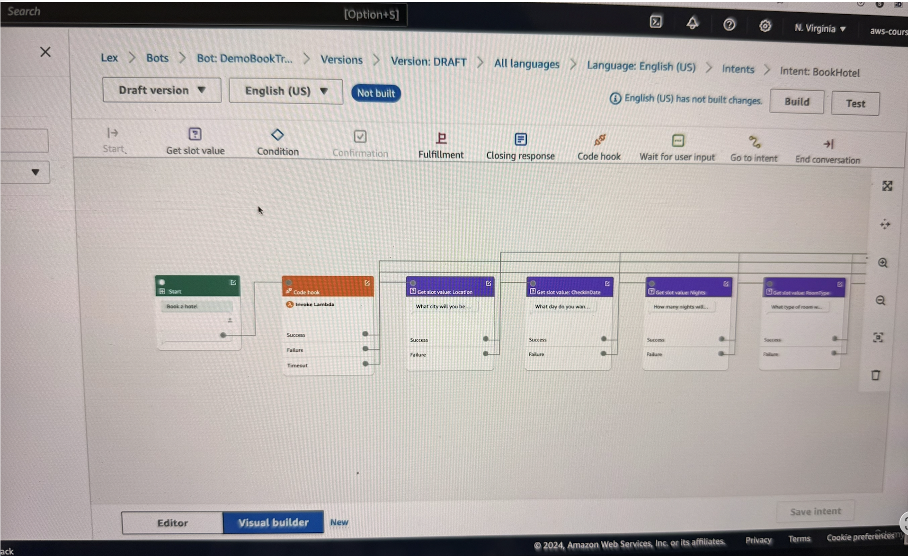
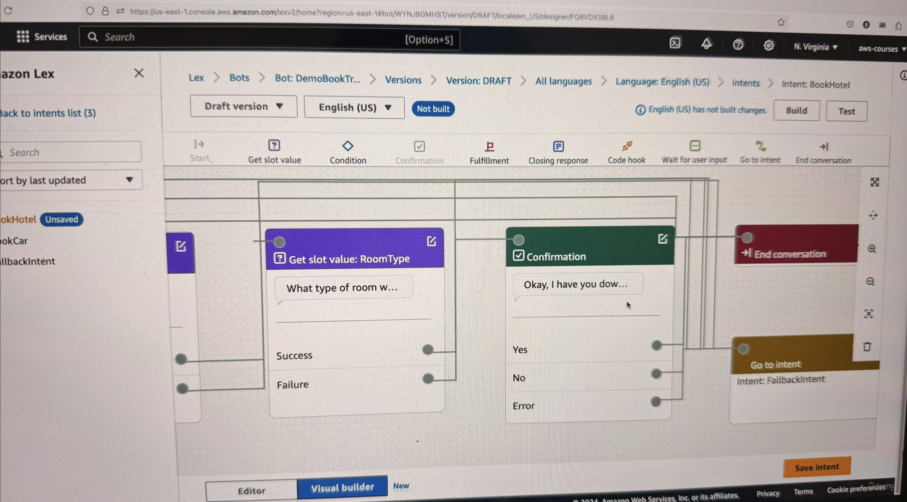
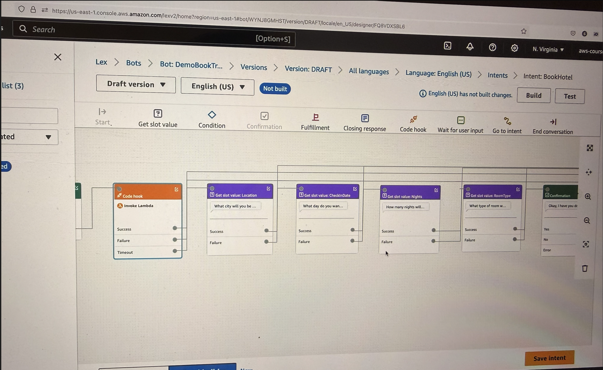
You can visually see the start and the end of your conversation, what gets invoked, what Lambda function gets invoked, and so on.
It shows:
-
What is the start.
-
Then the code hook.
-
Then, it works to find the slot values, such as the
Location, theCheckInDate, theNights. -
And what happens on success, on failure, and so on.
-
And finally, the confirmation.
This is another way of defining the same thing we had on the left-hand side, but this time more visually.
Key Learning Points
As you can see, the builder is very powerful. You can have as many intents as you want, and then actions, and then utterances, and so on.
- Key Takeaway: From an exam perspective, Amazon Lex is going to be used to build chatbots and conversational AI, and to configure them all in a one-stop shop.